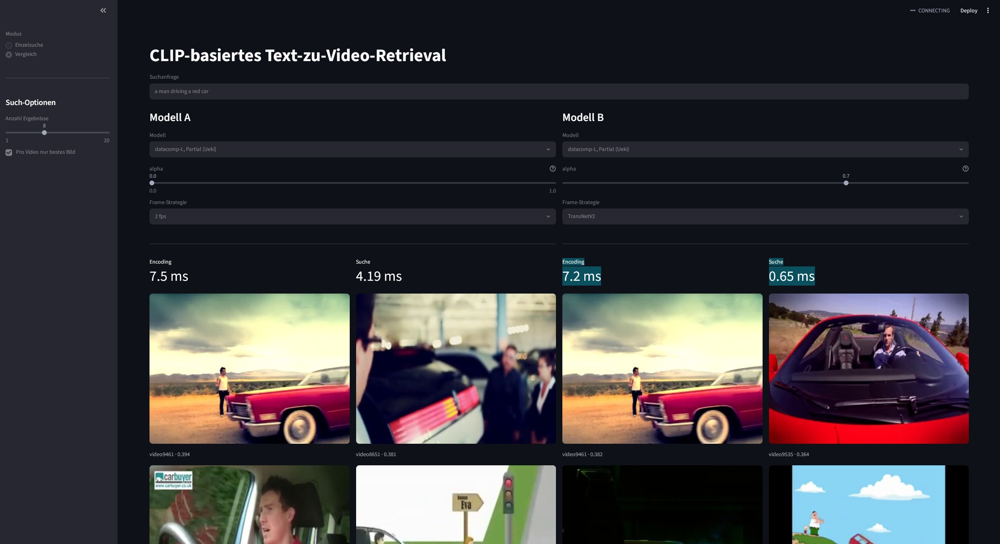

Known-Item-Search heißt: Du hast eine bestimmte Szene im Kopf, kennst sie vielleicht von früher, und willst sie in einer großen Videosammlung wiederfinden. Genau das wird beim Video Browser Showdown (VBS) unter Zeitdruck getestet. Die Suchanfrage ist dabei Text, gefunden werden soll eine Scene in einem Video.
CLIP bringt Text und Bild in einen gemeinsamen Vektorraum, das ist die Grundlage für solche Systeme. Spannend wird es bei zwei Fragen: Welche Frames eines Videos füttert man dem Modell überhaupt, und wie weit passt man das Modell per Fine-Tuning an, ohne dass es auf fremden Daten schlechter wird? Beides hängt an verschiedenen Stellen der Pipeline, und ich wollte wissen, wie die beiden Stellschrauben zusammenspielen.
// 02 ansatz
Stellschraube 1: Frame-Sampling
Verglichen habe ich feste Abtastraten mit 2, 1 und 0,5 Frames pro Sekunde sowie ein shot-basiertes Sampling, bei dem TransNetV2 die Schnittgrenzen im Video findet.
Stellschraube 2: WiSE-FT-Interpolation
Statt nur zwischen Zero-Shot und fertig fine-getuntem Modell zu wählen, werden die Gewichte beider linear gemischt. Der Faktor α läuft von 0,0 (reines Zero-Shot-Modell) bis 1,0 (vollständig fine-getuntes Modell) in 0,1er-Schritten.
Setup
Modell
OpenCLIP ViT-B/16
Checkpoints
datacomp_l · datacomp_xl
Fine-Tuning
zwei Strategien: partiell und vollständig
In-Domain
MSR-VTT, offizieller Split
Out-of-Distribution
Charades als Test
Umfang
knapp 200 Messungen (176 MSR-VTT + 22 OOD)
// 03 implementierung
Die Pipeline hat vier Schritte: Videos werden gesampelt, die Frames mit dem CLIP-Encoder eingebettet und in einem FAISS-Index abgelegt. Die Textanfrage läuft durch denselben Encoder und wird gegen den Index gesucht.
// pipeline
Streamlit-Prototyp
Zusätzlich gibt es eine Streamlit-App als Prototyp, mit der sich die Suche ausprobieren lässt.

Vergleichsmodus: zwei Modelle (hier mit verschiedenem α und Sampling) beantworten dieselbe Suchanfrage nebeneinander.
// 04 ergebnisse
In-Domain (MSR-VTT) liegt das α-Optimum bei 0,7–0,9, ich würde 0,8 empfehlen.
Out-of-Distribution (Charades) verschiebt es sich auf 0,2–0,6.
1 fps ist beim Frame-Sampling die beste Wahl: 2 fps bringt kaum einen Vorteil, braucht aber doppelt so viele Frames.
Die Wahl des Pretraining-Checkpoints wirkt stärker als die untersuchten Optimierungen.
// α-explorer
// explorer wird geladen
Regler und Kurven für α (bekannte vs. fremde Daten) erscheinen hier. Falls nichts passiert: Der Explorer braucht JavaScript und läuft nur über einen Webserver, nicht beim direkten Öffnen der Datei.
Effizienz
Partielles Fine-Tuning dauerte nur 55 % so lange wie das vollständige und erreichte beinahe dieselben Ergebnisse.
1 fps war deutlich effizienter als 2 fps: halb so viele Frames bei kaum schlechteren Ergebnissen.
// 05 grenzen & was ich anders machen würde
Die Arbeit hat Schwächen, und die gehören dazu. Das sind die Punkte, die ich benennen will:
Warmup falsch konfiguriert.Der Default von 10.000 Warmup-Schritten blieb gesetzt, dadurch war die effektive Lernrate sehr klein.
α auf dem Test-Split gewählt.Das α-Optimum wurde auf denselben Daten bestimmt, auf denen die Ergebnisse berichtet werden. Sauberer wäre ein eigener Validierungs-Split gewesen.